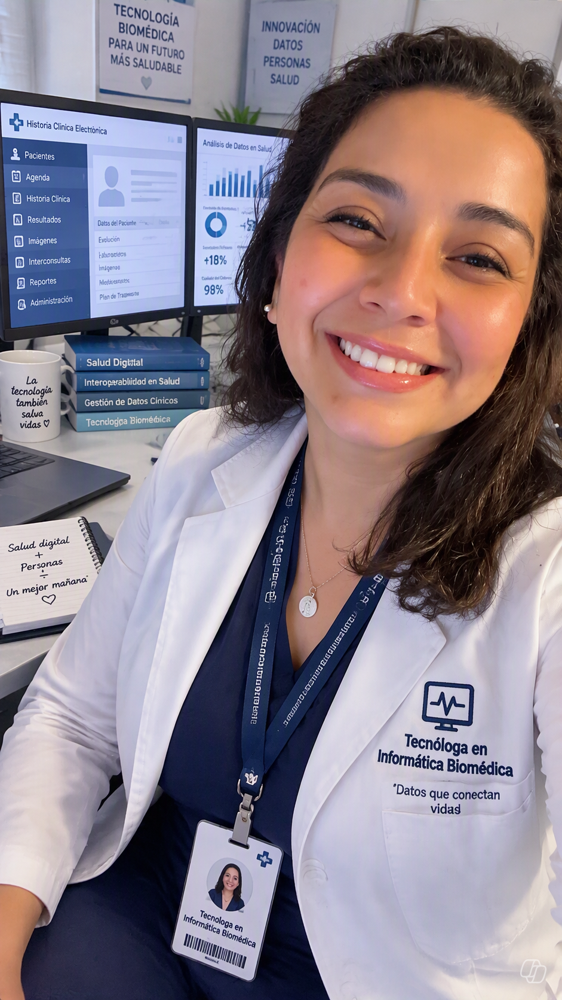
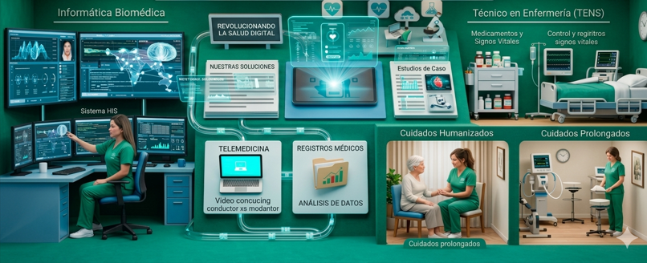
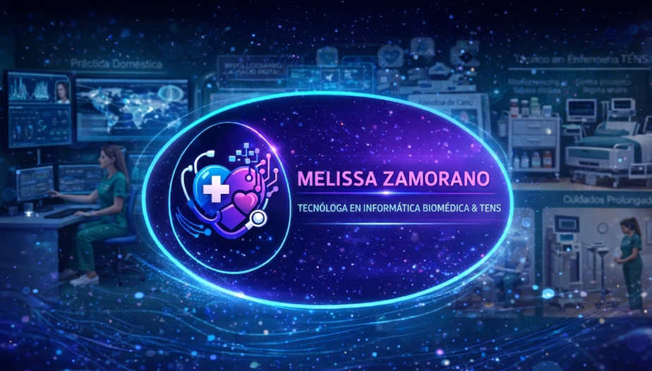
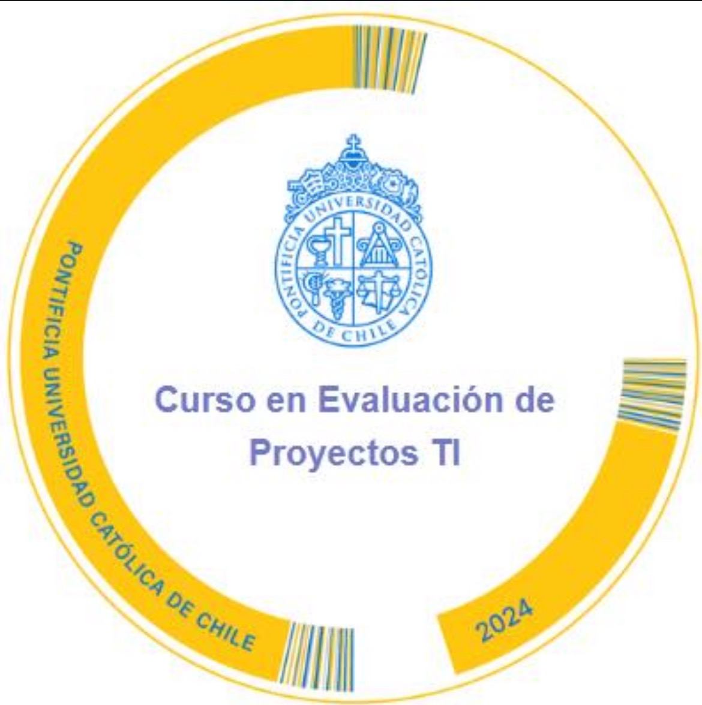

Melissa Zamorano
Transformación digital en salud con experiencia real en áreas críticas y atención domiciliaria.
UPC · UCI · UTI · Urgencias · Atención clínica domiciliaria · Consultoría en salud digital.
Mi trayectoria integra la práctica asistencial con el análisis funcional de sistemas HIS, la gestión de información biomédica y la evaluación de proyectos TI.
📄 Descargar CV profesional

Sobre mí
Tecnóloga en Informática Biomédica y TENS con más de 16 años de experiencia clínica en áreas de alta complejidad y atención domiciliaria. Especializada en sistemas HIS, TrakCare, SIDRA e interoperabilidad HL7/FHIR, integro la visión clínica y tecnológica para impulsar la transformación digital en salud. Además, soy asesora tecnológica en análisis de datos en salud con R.

Servicios como TENS a domicilio
Atención clínica directa
- Administración de medicamentos IM, SC, EV y orales.
- Curaciones avanzadas y manejo de heridas complejas.
- Control de signos vitales y monitoreo clínico.
- Manejo de pacientes postoperatorios.
- Atención de pacientes crónicos y dependientes.
- Educación al paciente y familia.
Procedimientos especializados
- Instalación y manejo de vías periféricas.
- Retiro de puntos y suturas.
- Nebulizaciones y manejo respiratorio básico.
- Control glicémico y manejo de insulina.
- Toma de muestras (sangre, orina, cultivos).


Servicios en salud digital
Consultoría funcional HIS · TrakCare · SIDRA
- Levantamiento de requerimientos clínicos.
- Soporte funcional a usuarios.
- Optimización de flujos asistenciales.
- Validación de registros clínicos y codificación.
Informática biomédica
- Modelamiento y consultas SQL.
- Reportes biomédicos e inteligencia de negocios.
- Minería de datos aplicada a salud.
- Diseño de prototipos y mejora de procesos.
Formación académica
Títulos
- Tecnóloga en Informática Biomédica – Duoc UC (2024).
- Técnico Superior de Enfermería – Duoc UC (2010).
Evaluación de Proyectos TI (EPTI)
- VAN, TIR, flujos de caja.
- Análisis de riesgos.
- Priorización de iniciativas.
- Gestión en entornos VUCA.

Certificaciones internacionales OPS/PAHO
Reseñas
Paciente – Atención domiciliaria
Melissa me atendió después de una cirugía, sus curaciones fueron impecables y siempre me explicó todo con claridad.
— María A.
Consultoría HIS / TrakCare
Su capacidad para traducir necesidades clínicas en requerimientos técnicos permitió mejorar nuestros flujos asistenciales.
— Coordinador Clínico, SSMO
Paciente crónico
Su trato humano y profesionalismo han sido fundamentales en mi tratamiento.
— Jorge R.
Proyecto de salud digital
Su visión clínica–tecnológica permitió que el proyecto avanzara sin fricciones entre el equipo clínico y TI.
— Jefatura TI, Hospital público
Noticias importantes en salud
Revisa las últimas actualizaciones del Ministerio de Salud de Chile:
Puedes destacar aquí noticias relevantes, cambios en protocolos, nuevas guías clínicas o actualizaciones relacionadas con salud digital.
Contacto
Si necesitas atención de enfermería a domicilio, apoyo en proyectos de salud digital o consultoría funcional en sistemas HIS, puedes contactarme directamente: